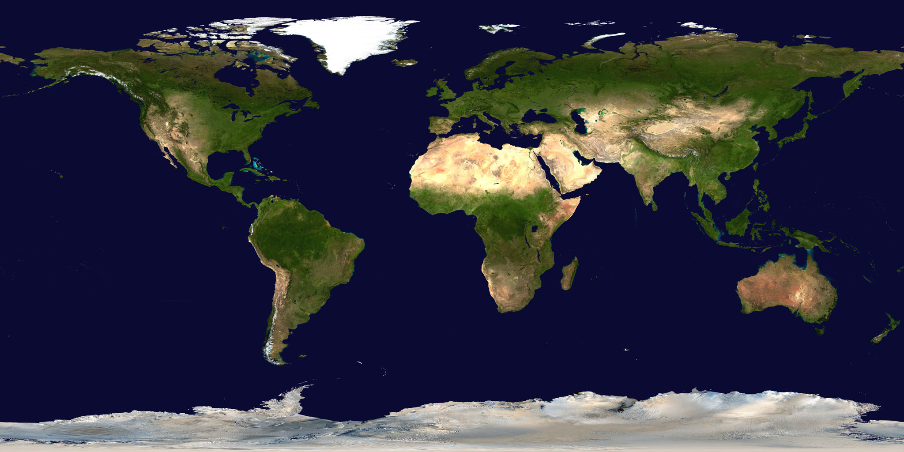

Mataró · Altazimutal
Alt: -- · Az: --
Eclipses
Visualización
Reproducción
Perfil del limbo
Solar Eclipse Explorer
COSMOS MATARÓ
Eclipses Destacados (Trío Ibérico)
12 Ago 2026 (Total España)
2 Ago 2027 (Total España/Sur)
26 Ene 2028 (Anular España)
Buscar
Cargando...
Por año
Por saros
Por ubicación
Selecciona fecha...
-54a
-18a
38 / 71
+18a
+54a
Eclipse total central
Tipo
TOTAL
Saros
136
(38/71)
Magnitud
1.0790
Gamma (γ)
0.1421
Duración
06m 23s
Franja
258 km
Altura Sol
81.7°
Tiempo
10:08 TT
Latitud
25° 30' 09" N
Longitud
33° 10' 17" E
TT‑UT1
s
Catálogo
#9568
Datos:
Five Millennium Catalog of Solar Eclipses
Fred Espenak & Jean Meeus · NASA GSFC
Visualización
Ubicación
GE
GD
Visibilidad Local
iCal
41° 32' 58" N · 2° 26' 53" E
UTC+2
TOTAL
Fase
Hora (UTC+2)
Altitud
Azimut
Modo de vista
3D
Mapa
Telescopio
Ruta
Capas y opciones
Conos de sombra
Órbita de la Luna
Plano eclíptico
Más...
Esfera celeste y estrellas
Líneas de constelaciones
Nodos de la órbita
Límites de eclipse
Rótulos de los límites
Gradiente penumbral
Línea central
Franja de totalidad
Observador
Punto subsolar
Punto sublunar
Red geográfica
Iluminación global
Líneas de ocultación y tiempo
Rótulos
Orientación altazimutal
Línea de horizonte
Rótulos
Más...
Perfil del limbo
Rótulos
Registro de actividad
Estilo de mapa
Oscuro
Callejero
Satélite
Capas del eclipse
Línea central
Límites norte / sur
Franja de totalidad / anularidad
Perfil del limbo
Libración lunar
l
0.4°
b
0.0°
c
14.0°
Fase
Hora (UT1)
Ángulo polar
C2'
--:--:--
P2'
--
C3'
--:--:--
P3'
--
Dur.
--
Altimetría:
NASA LRO / LOLA